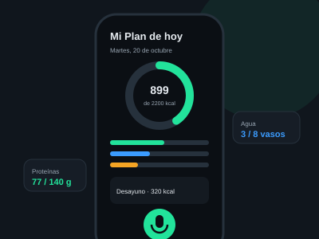
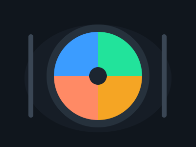
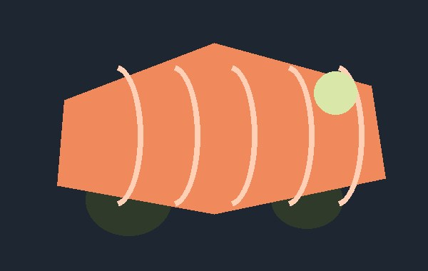

Dictado y escáner IA
Habla o toma una foto de tu plato; la IA estima porciones y te deja editar.
Probar ahora →🧪 Estás en el simulador interactivo de NutriApp: los registros por voz, foto y recomendaciones actualizan tu progreso en tiempo real. La app llega muy pronto →
App de nutrición · ODS 3 · Salud y bienestar
NutriApp combina reconocimiento de voz, escaneo de platos por imagen y un asistente conversacional para registrar tus comidas en segundos, prevenir la anemia y darte recomendaciones personalizadas.
🎤 Registrar por voz o foto🛡️ Transparencia y privacidad: tú siempre revisas y confirmas antes de guardar. El audio y las fotos no se almacenan.

Funciones inteligentes conectadas
Cada módulo está conectado a tu diario del día para evitar pasos repetitivos.
Habla o toma una foto de tu plato; la IA estima porciones y te deja editar.
Probar ahora →Filtra por preferencias y añade alimentos ricos en hierro en 1 clic.
Explorar →Visualiza macros, recibe alertas de déficit y corrige sin calcular kcal.
Ver progreso →Pide ayuda en lenguaje natural para configurar metas o corregir platos.
Abrir asistente →
Quiénes somos
NutriApp nace para eliminar la fricción de escribir cada ingrediente a mano y calcular gramos. Incorporamos interfaces multimodales e IA explicable para que cualquier persona pueda llevar su control nutricional sin conocimientos técnicos.
Registro por voz o foto con confirmación del usuario, recomendaciones personalizadas para prevenir la anemia y recuperación simple ante errores. Así contribuimos al ODS 3: Salud y bienestar.
🤖 IA con Control del Usuario: elige cómo ingresar tu comida. La IA extrae alimentos y calorías, muestra su nivel de confianza y espera tu confirmación antes de añadirla a Mi Progreso.
Pulsa el botón para hablar con tu micrófono o selecciona una frase de prueba rápida.
La IA detecta los alimentos visibles y estima su peso en gramos para evitarte cálculos manuales.
🥗 Integración directa: elige un grupo y añade cualquier alimento a tu progreso del día con un solo clic.
La anemia aparece cuando la sangre no tiene suficiente hemoglobina para llevar oxígeno. Incluir alimentos ricos en hierro y combinarlos con vitamina C mejora su absorción.
Valores referenciales educativos (INS/CENAN). Para un diagnóstico médico consulta a un profesional de salud.
📊 Panel conectado: cualquier comida registrada por voz, foto o tabla actualiza tus indicadores aquí al instante.
Consumidas
899 kcal
de 2,200 kcal
Restantes
1,301 kcal
Te faltan 63 g de proteína
Peso actual
74.5 kg
▼ −2.3 kg este mes
76.2 → 74.5 kg en 6 días.
🍽️ Registro conectado: selecciona una porción y regístrala directamente en tu diario del día.

Con la versión móvil tendrás reconocimiento de voz continuo, escáner con cámara en vivo y alertas inteligentes para cuidar tu alimentación cada día.
Grupo 2
| Integrante | Código | Responsabilidad | Sección |
|---|---|---|---|
| Juan Carlos Raymundo Mendiola Morales | U20251C132 | H04 · Detalle de alimento y registro de porción | Ver |
| Renzo | U202514302 | H01 · Registro multimodal por voz e imagen | Ver |
| Rene Victoria | U20251A560 | H03 · Progreso nutricional, recomendaciones y corrección | Ver |
| Roddick Tejada | U202511817 | Estructura e integración + Asistente HAX | Ver |
| Christian Alvarez | U20251F719 | H02 · Consultar alimentos ricos en hierro | Ver |